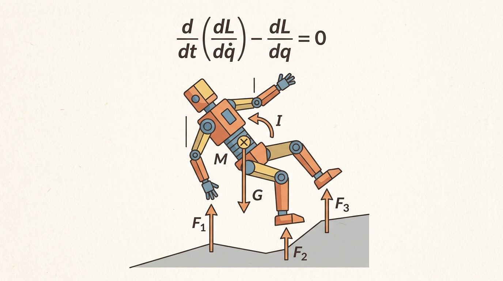
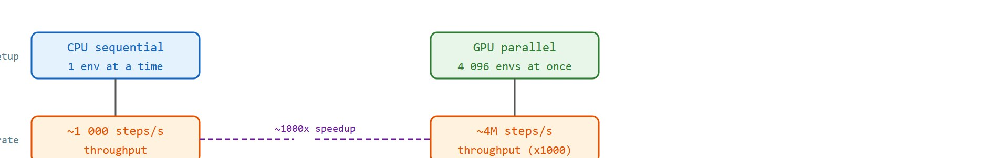
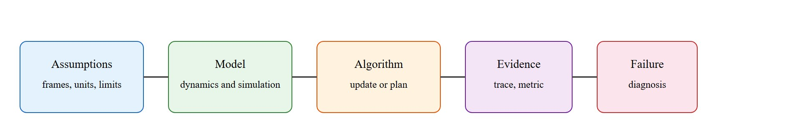

"When a million robots can fall, recover, and fall again before lunch, failure stops being expensive and starts being data."
A Parallel Policy Trainer

This section assumes familiarity with rigid-body dynamics and the equations of motion developed in sections 6.1 through 6.4. The parallel-simulation ideas introduced here are applied directly in section 17.2, which builds full GPU-accelerated reinforcement learning pipelines on top of the batch rollout pattern shown here, and in section 13.2, which uses the same massive throughput to run domain randomization at scale. For the model-based complement, where minimal-coordinate dynamics replaces the GPU simulator inside a controller, see section 37.3.
Before GPU-parallel simulation, the standard training loop for a locomotion or manipulation policy looked like this: launch one MuJoCo (Multi-Joint dynamics with Contact, a widely used physics engine for robot simulation) process, step the environment forward through its equations of motion, wait for the next state, send an action, and repeat for millions of steps. On a single CPU core that loop ran at roughly 500 to 2000 steps per second. A competitive locomotion policy required hundreds of millions of steps, so wall-clock time in days was normal. The bottleneck was not the neural network forward pass; experience collection dominated. GPU-parallel simulation attacks that bottleneck directly: instead of one sequential environment, it runs 4096 environments simultaneously under a single batched kernel. That same policy needs roughly 48 hours on one CPU core to collect enough experience; on a single GPU with 4096 parallel environments it takes under 30 minutes (as of 2024, on hardware such as an A100 or H100). Throughput jumps by roughly three orders of magnitude, and training time collapses from days to minutes. That shift made it practical to explore curriculum schedules, randomized terrain, and domain randomization at a scale that was previously unaffordable. Figure 6.6A captures this shift in spirit: the same robot failing, recovering, and failing again across many parallel worlds at once.

A humanoid walking policy trained in 2018 required roughly a week of CPU simulation to collect enough experience. The same policy today trains in under an hour because a single GPU can step 4,096 environments simultaneously, all running the same physics kernel on different data. That three-order-of-magnitude speedup is not an incremental improvement; it is what made curriculum learning, terrain randomization, and large-scale sim-to-real transfer practically accessible. By the end of this section you will understand the batch-rollout contract that makes GPU simulation warp-efficient, when maximal versus minimal coordinates serve you better, and what validity checks must accompany any throughput number to make it meaningful.
The technical contract for GPU-parallel simulation becomes a usable mental model in three moves: define the object of study, connect it to the agent loop, then test it with a compact implementation.
The practical question is direct: what must the agent know, what can it observe, what action is available, and what evidence shows that the action worked under the stated conditions?
GPU-parallel simulation only matters if it changes what a robot can do on hardware. The clearest proof point is ETH Zurich and ANYbotics teaching ANYmal to traverse stairs and rubble: the 2019 to 2022 line of work (Hwangbo's actuator-net policies, then Rudin's Learning to Walk in Minutes with Isaac Gym, then Miki's perceptive locomotion in Science Robotics) trained blind and perceptive walking policies across thousands of randomized terrains and transferred them to the physical quadruped with no fine-tuning. The right question for this section is not "how fast is the simulator" but "did the policy trained at 4096x parallelism walk on real stairs it never saw," and for ANYmal the answer was yes.
For Why GPU-parallel simulation changed robot learning, the practical design rule is to make the interface inspectable before optimization begins: inputs, outputs, units, latency, bounds, and failure labels should all be visible in the saved artifact.
The mechanism in Why GPU-parallel simulation changed robot learning is the contract between representation and action. Name what enters the module, what leaves it, which assumptions make that transformation valid, and which log would reveal a bad handoff.
To make that representation-to-action contract concrete, the worked example below replaces the abstract handoff with a runnable batch step you can trace line by line.
The change GPU simulation brought is that one stepped environment becomes $N$ stepped environments under a single kernel call: $x_{k+1}^{(i)} = f_\Delta(x_k^{(i)}, u_k^{(i)}, \theta^{(i)})$ for $i = 1,\dots,N$. The example below shows the mechanism with NumPy as a stand-in for the GPU: the same physics step applied to a batch of pendulums with different initial conditions, stepped with fixed-shape arrays. On a GPU (MJX, Isaac, Brax) the identical code runs across thousands of environments in parallel because every environment does the same arithmetic with no data-dependent branching.
import numpy as np
g, L, dt = 9.81, 1.0, 0.02
N, steps = 4096, 500 # 4096 environments, 10 s each
rng = np.random.default_rng(0)
theta = rng.uniform(-1.0, 1.0, size=N) # batched state: shape (N,)
omega = np.zeros(N)
# One vectorized symplectic-Euler step over the whole batch.
for _ in range(steps):
omega = omega - dt * (g / L) * np.sin(theta) # shape (N,) elementwise
theta = theta + dt * omega
# Co-compute a validity check alongside the rollout: energy stays bounded.
E = 0.5 * L**2 * omega**2 + g * L * (1 - np.cos(theta))
print(f"stepped {N} envs x {steps} steps = {N*steps:,} transitions")
print(f"final energy mean={E.mean():.4f} std={E.std():.4f} max={E.max():.4f}")
# Throughput is meaningful ONLY beside this bounded-energy check.The single-line update stepping all $N$ environments is the whole idea: homogeneous, branch-free work that a GPU executes as one batched kernel. The energy check co-computed in the same pass is the discipline the section insists on, throughput without a validity check is not evidence.
Trace the vectorized pendulum update with a tiny batch of $N=3$ environments, $g/L = 9.81$, $dt = 0.02$. Start with $\theta = [0.50, -0.30, 1.00]$ and $\omega = [0, 0, 0]$.
Step 1, omega update ($\omega \leftarrow \omega - dt \cdot (g/L) \cdot \sin\theta$): $\sin\theta = [0.4794, -0.2955, 0.8415]$, so the change is $-0.02 \times 9.81 \times \sin\theta = [-0.0941, 0.0580, -0.1651]$. New $\omega = [-0.0941, 0.0580, -0.1651]$. All three computed by the same instruction on three lanes, no branching.
Step 1, theta update ($\theta \leftarrow \theta + dt \cdot \omega$): $\theta = [0.50, -0.30, 1.00] + 0.02 \times [-0.0941, 0.0580, -0.1651] = [0.4981, -0.2988, 0.9967]$.
Step 2, omega update: $\sin\theta = [0.4779, -0.2944, 0.8400]$; $\omega = [-0.0941, 0.0580, -0.1651] - 0.02 \times 9.81 \times \sin\theta = [-0.1879, 0.1158, -0.3299]$. The three trajectories diverge in value but never in control flow, which is exactly what keeps a warp full. After 500 such steps the energy check $E = 0.5\,\omega^2 + g(1 - \cos\theta)$ should remain near its initial value of $[0.48, 0.044, 1.92]$ per environment.
A GPU contains thousands of narrow cores organized into warps (typically 32 threads). All threads in a warp execute the same instruction simultaneously; if threads diverge (one takes an if-branch the others skip), the warp serializes and throughput collapses. Simulation of $N$ independent environments with a fixed timestep is almost perfectly warp-friendly: every environment runs the same physics kernel on different data, with no data-dependent branching. This is called SIMT (single instruction, multiple threads) execution. CPU-sequential simulation is the opposite: one environment at a time, but with full branch freedom. The speedup from GPU-parallel simulation is therefore largest when (a) episodes are the same length, (b) contact events are handled uniformly across the batch, and (c) reset logic can be batched rather than triggered one environment at a time. MJX and Isaac Lab are designed around exactly these constraints.
When episode lengths vary across the batch (a robot falls at step 50 while others run to step 500), idle environments stall their warp and throughput collapses. Isaac Lab handles this with its reset_buf mechanism: set reset_buf[i] = 1 for any environment that terminates, and the framework resets only those environments at the next step rather than waiting for the full batch to finish. In Brax, the equivalent pattern is passing a per-environment done flag to jax.lax.cond inside the step function so JIT compilation keeps the computation graph uniform. Homogenizing episode length by using a fixed max-step truncation (rather than early termination on task success) is the fastest single change to recover warp efficiency when you first notice GPU utilization below 80 percent.
The other axis that decides simulator behavior is how state is represented. MuJoCo (and MJX, Isaac) lean toward maximal coordinates with constraints, while Pinocchio uses minimal (generalized) coordinates. The two are duals, and the right choice depends on the workload.
| Aspect | Maximal coordinates (MuJoCo, Isaac) | Minimal coordinates (Pinocchio) |
|---|---|---|
| State | Full pose of every body, joints enforced as constraints. | Only the independent joint variables $q$. |
| Contact | Native: contacts are just more constraints in the same solver. | Added on top; the library focuses on articulated-body dynamics. |
| Cost per step | Larger system, but uniform, GPU-batches well. | $O(n)$ recursive dynamics (RNEA, Recursive Newton-Euler Algorithm; ABA, Articulated Body Algorithm), very cheap per call. |
| Best for | Contact-rich RL at massive parallelism (locomotion, manipulation). | Model-based control, fast analytical $M,C,g$ and derivatives. |
| Drift | Constraints can be violated slightly; needs stabilization. | No constraint drift; joints are exact by construction. |
Constraint drift matters on a real robot because a simulated joint that has drifted even a few millimeters produces wrong torque predictions. MuJoCo's Baumgarte stabilization (a correction term, proportional to accumulated position error, added at the velocity level every step) is the standard fix: it pulls joints back toward the constraint manifold without a hard projection step.
Think of a constraint like a lane-keeping rule on a highway. A car that drifts a centimeter sideways each second is still roughly in its lane for a minute, but after ten minutes it has crossed two lanes of traffic. Baumgarte stabilization is the equivalent of a gentle steering correction applied every second, proportional to how far off-center the car already is, pulling it back before the drift compounds. Too weak a correction and the car still wanders; too aggressive and the wheel jerks, shaking the whole vehicle. The simulator faces exactly the same tuning problem: the gain must be strong enough to prevent compounding position error across thousands of timesteps, but gentle enough not to inject oscillations into the contact forces the policy is learning from.
So far: GPU-parallel simulation trades one sequential CPU environment for thousands of branch-free batched environments (roughly a thousand-fold throughput gain), but that gain is only trustworthy once constraint drift is controlled (via Baumgarte stabilization) and co-computed with a validity check such as bounded energy, since a maximal-coordinate simulator can run fast and still be wrong.
The practical rule: reach for a maximal-coordinate GPU simulator when the task is contact-rich and the bottleneck is sample throughput for learning; reach for minimal-coordinate Pinocchio when you need fast, exact $M$, $C$, $g$ and their analytic derivatives for a model-based controller or optimizer. Many production stacks use both, Pinocchio inside the controller and MJX or Isaac for the training loop, and validate that they agree on the same model before trusting either.
For Why GPU-parallel simulation changed robot learning, the hand-built fragment exposes the physical assumption before maintained tools take over. MuJoCo, MJX, Drake, Pinocchio, and Isaac Lab are useful only when the same mass, contact, actuator, and timestep contract is preserved.
Because that shared contract is exactly what separates a trustworthy speedup from a fast way to be wrong, the steps below sequence the validation work that must precede any jump to thousands of parallel environments.
num_envs=256 first, not 4096. Measure GPU utilization with nvidia-smi dmon; if SM utilization (the fraction of Streaming Multiprocessor cycles doing useful work, rather than sitting idle waiting on divergent or serialized environments) is below 70%, your episode lengths are too variable or your reset logic is serialized.A common assumption when scaling to GPU-parallel simulation is that running thousands of parallel environments makes simulation more accurate or physically correct. This is wrong: GPU parallelism increases throughput, not fidelity. Each of the 4096 environments runs the same simplified physics kernel with the same contact approximations, timestep errors, and model inaccuracies as a single CPU environment would. Scaling a flawed simulator produces flawed experience faster, and policies trained on systematically wrong contact forces or inertia values will still fail to transfer to real hardware. The correct mental model is that parallelism solves the sample-collection bottleneck while leaving the simulator contract (its timestep, contact model, actuator limits, and drift behavior) entirely unchanged and equally in need of validation.
The most common failure when scaling to GPU-parallel simulation is that reward hacking (the policy finds a shortcut that maximizes the reward signal without accomplishing the intended task) becomes invisible at speed. In CPU sequential training you notice when a biped learns to exploit a contact bug because you watch a few rollouts. With 4096 parallel environments, a policy that discovers an unintended stance (such as sitting on a Unitree Go2 to exploit a badly shaped survival reward) converges in minutes before any human reviews a trajectory. Log per-environment contact force distributions and base height histograms every 500 policy updates, not just final success rate.
The ANYbotics ANYmal locomotion policy trained in Isaac Lab used 4096 parallel environments on a single A100. The team reported that domain randomization over terrain height (0 to 20 cm steps), friction coefficients (0.5 to 1.25), and payload mass (0 to 15 kg) required no additional wall-clock time compared to a single-terrain run because all variants ran simultaneously across the batch. Sim-to-real transfer was validated by comparing joint velocity tracking error: simulation showed under 0.3 rad/s RMS error at 2.0 m/s trot; hardware matched within 0.05 rad/s after the same policy was uploaded without fine-tuning.
Differentiable and learned contact models (2024-2026). Classical GPU simulators hard-code a contact model (MuJoCo's smooth approximation, Isaac's spring-damper). A 2024-2025 direction replaces or augments that model with a learned residual trained on real robot contact data, so the simulator self-corrects its own inaccuracies rather than requiring hand-tuned stiffness parameters. The Google DeepMind team's work on learned contact residuals inside MJX (2024) and the ETH Zurich RaiSim group's physics-residual policies for legged locomotion exemplify this line. The open challenge is learning a contact correction that generalizes across surface types unseen during residual training, which current methods still fail on coarsely.
Massively parallel simulation for dexterous manipulation (2024-2026). GPU parallelism was proven for locomotion but dexterous hand manipulation resists it: finger contacts are numerous, spatially non-uniform, and stochastic, so batches of 4096 environments diverge in contact state within a few steps and warp utilization collapses. The NVIDIA Isaac Lab team's DextrAH-G work (2025) and the Berkeley HumanoidBench suite (2024) are pushing structured reset curricula and contact-aware batch partitioning to restore warp efficiency for five-fingered tasks. Commercial simulators still report three to five times lower effective throughput per GPU for dexterous contact versus locomotion contact.
Simulation-to-real gap as a trainable objective (2025-2026). Rather than minimizing the sim-to-real gap after training, several 2025 papers treat the gap itself as a differentiable loss that jointly trains the policy and the simulator parameters during GPU-parallel rollouts. Genesis (2024, MIT and CMU) provides a fully differentiable physics pipeline that lets gradient signals flow through rigid and deformable contact simultaneously, enabling this joint optimization at GPU scale. Deformable and granular media (cloth, sand, gravel) remain the hardest cases because they break the homogeneous-kernel assumption and different mesh cells require different constraint-iteration counts, preventing uniform warp execution.
Before reading on, consider: if your GPU simulator runs 4096 parallel environments but cannot tell you how confident it is that any single contact prediction will hold on real hardware, how would you even know when to trust the transfer? No current GPU-parallel simulator provides a statistically calibrated uncertainty estimate over its own contact predictions: the simulator either gives a single deterministic trajectory or a noise-injected domain-randomized trajectory, but neither quantifies how likely it is that a given contact sequence transfers to hardware. Designing a GPU-batch-compatible Bayesian contact model that produces calibrated transfer-confidence intervals alongside throughput, without destroying warp efficiency, remains an open problem with direct practical payoff for any lab running sim-to-real transfer experiments.
Can you state the specific timestep, contact model, actuator model, and reset distribution used in your GPU-parallel training run? Can you name the sim-to-real gap metric and its acceptable threshold for your target robot? If not, the simulation contract is still too vague to trust transfer results.
Why GPU-parallel simulation changed robot learning sits inside the Part II robotics contract: geometry defines where things are, kinematics defines what motion is possible, dynamics defines what motion costs, control defines how errors are corrected, and sensing defines what the agent can know on time.
Scale GPU simulation only after small deterministic rollouts confirm matching state, action, reward, and reset semantics. Each of those has an intuitive role, a formal interface, a runnable check, and a reproducible failure mode.
GPU-parallel simulation changed robot learning because it made experience collection a batch computation. Instead of running one environment, waiting for its next state, and repeating, the learner steps thousands of environments with different seeds, commands, terrains, and object poses. A terrain curriculum that needs 50,000 episodes to converge on a CPU typically takes on the order of 12 rounds of wall-clock iteration on a GPU with 4096 parallel environments (50,000 divided by 4096, rounded up), though the exact ratio depends on how evenly the batch's episode lengths align. Each optimizer "episode" is actually 4096 episodes running at once, so the week-long commitment becomes an afternoon experiment. The risk is that faster experience also multiplies invalid assumptions faster. A policy that works in simulation but fails on hardware is not a policy: it is a very fast way to be wrong.
A million simulated transitions are useful only when their reset distribution, reward definition, contact model, and termination logic match the question being asked. Parallelism improves sample supply; it does not repair a wrong simulator contract.
For Why GPU-parallel simulation changed robot learning, dynamics adds causes of motion: forces, torques, inertia, contact impulses, and integration. Keep units, solver step, contact parameters, and energy behavior visible.
| Tool or Library | What It Handles | Verification Check |
|---|---|---|
| MuJoCo | runs articulated dynamics and contact simulation for robot learning experiments | Verify timestep, solver parameters, contact settings, and reset semantics. |
| MJX | runs articulated dynamics and contact simulation for robot learning experiments | Verify timestep, solver parameters, contact settings, and reset semantics. |
| Drake | models dynamical systems, multibody plants, optimization, and controllers | Verify scalar type, plant finalization, frame convention, and solver status. |
| Pinocchio | computes articulated-body kinematics, dynamics, and derivatives | Verify model frames, joint ordering, and derivative convention against the URDF. |
| Isaac Lab | scales robot-learning simulation with GPU workflows and sensor-rich scenes | Verify environment parity, reset distribution, and logged seeds before training. |
Use this recipe when turning Why GPU-parallel simulation changed robot learning into code, a simulator experiment, or a robot diagnostic. The point is not to use every library. The point is to keep the hand-built baseline and the maintained-tool path comparable. Followed in order, these five steps are exactly what let a lab claim the speedup this section opened with: the batch-rollout pattern only changes robot learning once the single-environment baseline, the scaled batch, and the sim-to-real gap have each been checked, not merely once the throughput number looks large.
For Why GPU-parallel simulation changed robot learning, compare methods only through one saved artifact that preserves the inputs, outputs, units, timestamps, latency budget, configuration, seed, metric definition, and failure labels relevant to this section. The comparison is meaningful only when the same script evaluates the same panel.
Extend the section exercise by adding one perturbation specific to Why GPU-parallel simulation changed robot learning and one latency or uncertainty check. Save the result in the EvidenceRecord schema, then explain which library output you trust and why.
For Why GPU-parallel simulation changed robot learning, distrust smooth simulation until the section-specific physical assumption has been stress-tested: timestep, contact stiffness, damping, friction, actuation, and energy behavior should each have a small diagnostic.
Why GPU-parallel simulation changed robot learning needs a topic-native core: variables, equations or system contracts, an algorithmic procedure, an expected output, and a failure diagnosis. Figure 6.6.T summarizes the chain this section must preserve when moving from a teaching example to a real embodied system.

Vectorized simulation treats the batch as $x_{k+1}^{(i)}=f_\Delta(x_k^{(i)},u_k^{(i)},\theta^{(i)})$ for environments $i=1,\dots,N$. The speedup comes from fixed-shape arrays, shared kernels, and synchronized stepping. That design favors homogeneous workloads, so variable-length episodes, rare contacts, and asynchronous resets must be represented carefully rather than hidden by average reward.
| Contract Field | What To Specify | Why It Matters |
|---|---|---|
| State and observation | Variables, units, timestamps, frames, and uncertainty. | Prevents a model score from being mistaken for robot capability. |
| Action interface | Command type, limits, update rate, and safety fallback. | Makes the learned or planned output executable. |
| Evidence artifact | Trace, metric, configuration, seed, and failure label. | Allows baseline and library path to be compared in one pass. |
| Tool path | MuJoCo, Drake, Isaac Sim, Gazebo, PyBullet, SAPIEN, NumPy | Shows the practical library route after the mechanism is understood. |
For Why GPU-parallel simulation changed robot learning, expected output is a state trace with the relevant physical invariant: bounded energy error for free motion, bounded penetration for contact, and a solver-status field that explains divergence.
Why GPU-parallel simulation changed robot learning is validated by conserved quantities where they should hold, stable contact where contact is expected, and reproducible divergence under a named parameter perturbation.
Core references for Why GPU-parallel simulation changed robot learning: Modern Robotics; Murray, Li, and Sastry; Siciliano et al.; LaValle; and the official documentation for Drake, MuJoCo, Pinocchio, CasADi, python-control, GTSAM, ROS 2, and OpenCV as applicable.
Use these references to check notation, frame conventions, solver assumptions, and library behavior before comparing hand-built and maintained-tool implementations.
Why GPU-parallel simulation changed robot learning is useful when it makes the perception-action loop more reliable, not when it merely adds a more impressive model name.
Design a method-matched experiment for Why GPU-parallel simulation changed robot learning. Specify the environment, observations, actions, metric, one perturbation, and the library output you would compare against the hand-built baseline.
OpenAI's Dactyl project taught a Shadow Hand to reorient a Rubik's cube using policies trained almost entirely in simulation, and the follow-on work moved to GPU-parallel rollouts to collect the years of equivalent manipulation experience in days. NVIDIA's Isaac Gym demonstrated the same idea at scale by training quadruped and humanoid locomotion policies on a single workstation GPU running thousands of environments at once, replacing what previously needed a CPU cluster.
At 4,096 environments running roughly 4 million steps per second, a single GPU collects in one hour what one real robot stepping at 50 Hz would take about 90 years of continuous, crash-free operation to experience. Put differently, the "million robots fall before lunch" image in this section's epigraph is a conservative undercount: the simulator can blow past a million simulated falls in well under a single second, which is why researchers stopped treating failed rollouts as wasted runs and started treating them as the densest part of the training signal.
Goal: See first-hand that parallel throughput is meaningless without a co-computed validity check, by sweeping batch size and timestep on the vectorized pendulum from this section.
Tools needed: Python with NumPy and Matplotlib (about 15 lines on top of the code listing above); optionally CuPy if you have a CUDA GPU, which is a drop-in replacement for numpy to run the identical batch on the device.
What to vary: (1) batch size $N \in \{1, 256, 4096, 65536\}$, timing each run with time.perf_counter to get steps-per-second; (2) the timestep $dt \in \{0.005, 0.02, 0.05, 0.1\}$ while holding $N$ fixed.
What to observe: throughput should climb steeply with $N$ then flatten once the array saturates memory bandwidth. Meanwhile the co-computed energy spread (E.std()) should stay near zero for small $dt$ and explode for $dt = 0.1$, where symplectic Euler goes unstable. The lesson lands when you find a setting that posts your highest steps-per-second number while the energy check is already diverging: fast and wrong at the same time. Swap in a smaller $dt$ or a velocity-Verlet step and confirm the energy spread collapses back toward zero without losing the throughput win.
Beginner (weekend): Batched pendulum energy dashboard with Gymnasium. Wrap the vectorized pendulum rollout from this section in a Gymnasium VectorEnv, run 256 parallel episodes, and plot per-environment energy drift versus timestep size using Matplotlib. The key challenge is understanding why energy grows when the timestep is too large and choosing a symplectic integrator to suppress it.
Intermediate (1-2 weeks): GPU-parallel hopper locomotion baseline in Isaac Lab. Reproduce a basic hopper walking policy using Isaac Lab with 2048 parallel environments, log per-environment contact force distributions and base height histograms every 500 updates, and compare GPU throughput against a single MuJoCo CPU environment. The key challenge is tuning the reset_buf mechanism and episode truncation length to keep GPU SM utilization above 70 percent and avoid reward hacking from early-termination bias.
Intermediate (1-2 weeks): Sim-to-real gap measurement for a Gymnasium CartPole to PyBullet transfer. Train a policy in Gymnasium CartPole, port the same URDF into PyBullet with explicit mass and pole-length noise randomization, and measure how transfer success rate changes as domain randomization range widens. The key challenge is ensuring the contact model and timestep contract match between the two simulators so that differences in success rate reflect genuine sim-to-real gap rather than simulator inconsistency.
Continue to Chapter 7: Control for AI Practitioners, where this contract becomes the input to the next embodied capability.